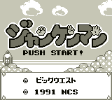

Jankenman (VGB)

The anime is about a very strange children's superhero anime. The hero
defeats villians by playing "jankenpon" (Paper, Scissors, Rock). It is a
Mario-style, vertical scrolling game.
Return to Emulator Table of Contents
Last Modified 7 April 1997
Created 2 Sept 1996
Luis A. Cruz
cruzl@ccs.neu.edu